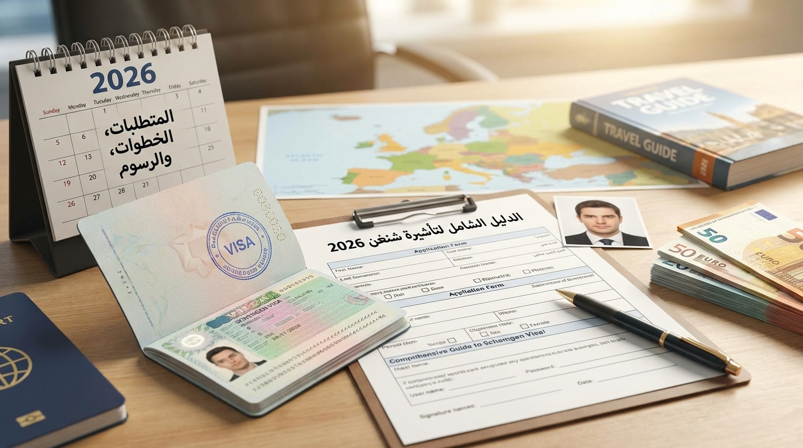

فيزا شنغن من جدة 2026 – تكلفة فيزا شنغن من السعودية – استخراج فيزا شنغن جدة – سعر فيزا شنغن 2026 – مكتب استخراج فيزا شنغن جدة
فيزا شنغن مستعجل من جدة
أفضل مكتب فيزا شنغن في جدة
في استخراج تأشيرات أوروبا
تُعد فيزا شنغن من جدة 2026 واحدة من أكثر التأشيرات التي يبحث عنها المسافرون في المملكة العربية السعودية، نظرًا لرغبتهم في السفر إلى دول أوروبا المختلفة مثل فرنسا، ألمانيا، إيطاليا، إسبانيا، وسويسرا. ومع تزايد الطلب على معرفة تكلفة استخراج فيزا شنغن من جدة 2026، أصبحت الحاجة إلى جهة موثوقة وذات خبرة أمرًا ضروريًا لضمان سرعة الإنجاز وارتفاع نسبة القبول.
وتُعد وكالة روز ترافل للسفر والسياحةبجدة من أبرز المكاتب المتخصصة في استخراج فيزا شنغن من جدة، حيث تقدم خدمات احترافية تشمل تجهيز الأوراق، حجز المواعيد، متابعة الطلبات، وتقديم الاستشارات لضمان أفضل فرصة للحصول على التأشيرة في أسرع وقت ممكن. يمكنكم الاطلاع على أفضل مكتب فيزا أوروبية في جدة ومكتب فيزا في جدة.

تختلف تكلفة فيزا شنغن من جدة 2026 حسب عدة عوامل مهمة، ولكن بشكل عام تتكون التكلفة من: رسوم التأشيرة الأساسية (رسوم السفارة)، رسوم مركز تقديم الطلبات، رسوم خدمات تجهيز الملف، رسوم حجز المواعيد والتأمين الصحي، وخدمات إضافية مثل الترجمة أو تجهيز المستندات. وتعمل وكالة روز ترافل للسفر والسياحةبجدة على تقديم أفضل الأسعار التنافسية. لمزيد من المعلومات عن فيزا فرنسا من جدة وفيزا سياحية من جدة.
رسوم فيزا شنغن 2026 تشمل:
للحصول على فيزا شنغن من جدة 2026 يجب توفير مجموعة من المستندات الأساسية: جواز سفر ساري المفعول، صور شخصية حديثة، كشف حساب بنكي، حجز طيران مبدئي، حجز فندق أو دعوة، تأمين طبي للسفر، ونموذج طلب التأشيرة. يمكنكم الاطلاع على تجهيز مستندات السفر في جدة.
أكثر من 10 سنوات في استخراج التأشيرات
فيزا شنغن مستعجل من جدة
أرخص مكتب فيزا شنغن بجدة
حتى صدور القرار
تُعد وكالة روز ترافل للسفر والسياحةبجدة من أفضل مكاتب استخراج فيزا شنغن في جدة بسبب سمعة موثوقة وخدمة احترافية. يمكنكم أيضاً قراءة وكالة روز ترافل للسفر والسياحةفي جدة.
تختلف مدة معالجة طلب فيزا شنغن من جدة 2026 حسب الدولة المقدمة إليها ونوع الملف. في الغالب تتراوح مدة المعالجة بين 7 إلى 15 يوم عمل في الحالات العادية، و3 إلى 7 أيام في الطلبات السريعة. تعرف على أخطاء تجهيز مستندات السفر لتجنب التأخير.
يواجه بعض المتقدمين رفض طلب فيزا شنغن من جدة لأسباب متعددة، من أبرزها: نقص أو ضعف في المستندات، عدم وجود إثبات مالي كافٍ، عدم وضوح خطة السفر، أخطاء في نموذج الطلب، أو حجز غير حقيقي. تقوم وكالة روز ترافل للسفر والسياحة بتقليل هذه المخاطر عبر تجهيز ملف قوي.
تساعد وكالة روز ترافل للسفر والسياحة العملاء في اختيار الدولة المناسبة للتقديم حسب الملف الشخصي، ومن أبرز الدول: فرنسا، إيطاليا، ألمانيا، إسبانيا، سويسرا. يمكنكم الاطلاع على أفضل الوجهات السياحية 2026.
لا تقتصر خدمات الوكالة على استخراج فيزا شنغن فقط، بل تشمل أيضًا: خدمات حجز الطيران والفنادق، حجز قطارات أوروبا، تنظيم رحلات سياحية، واستخراج تأشيرات سياحية أخرى. تعرف على خدمات شركة سياحية وشركة سياحة في جدة.
تقدم وكالة روز ترافل للسفر والسياحةبجدة خدمات استخراج فيزا شنغن من جدة 2026 لجميع العملاء في مختلف مناطق مدينة جدة والمملكة العربية السعودية. تشمل التغطية: شمال جدة (أبحر الشمالية، أبحر الجنوبية، الصالحية)، وسط جدة (الرويس، البغدادية، البلد)، شرق جدة (الحمراء، النسيم، الفيصلية)، وجنوب جدة (الجامعة، كيلو 7، مدائن الفهد). كما توفر الوكالة خدمة متابعة كاملة للطلبات دون الحاجة للحضور المتكرر. يمكنكم الاطلاع على أفضل مكتب سفر في جدة وأفضل مكاتب السفر في جدة.
في النهاية، تُعد فيزا شنغن من جدة 2026 من أهم التأشيرات التي يبحث عنها المسافرون. وتوفر وكالة روز ترافل للسفر والسياحةبجدة حلولًا متكاملة تشمل تجهيز الملفات، تقليل أخطاء الرفض، تسريع الإجراءات، وتقديم استشارات متخصصة.
إذا كنت تبحث عن تجربة سفر مضمونة إلى أوروبا، فإن التعامل مع وكالة روز ترافل للسفر والسياحة هو الخيار الأمثل.
للتواصل والحجز: 0502113147نجيب هنا على أكثر الأسئلة التي تصلنا حول فيزا شنغن.
تختلف التكلفة حسب الدولة ونوع التأشيرة، وتشمل رسوم السفارة والخدمات الإدارية والتأمين الصحي. تقدم وكالة روز ترافل للسفر والسياحة أفضل الأسعار التنافسية. يمكنكم الاطلاع على أفضل شركة سفر في جدة.
نعم، توفر وكالة روز ترافل للسفر والسياحة خدمة إنجاز سريع حسب توفر المواعيد ونوع الطلب، مع تجهيز ملف قوي يقلل مدة المعالجة. تعرف على أفضل شركة حجز طيران في جدة.
يعتمد ذلك على قوة الملف، ولكن من الدول الأكثر سهولة: فرنسا، إيطاليا، وإسبانيا. يمكنكم الاطلاع على عروض مكاتب السفر في جدة.
نعم، توفر وكالة روز ترافل للسفر والسياحة خدمات حجز فنادق جدة ومكتب حجز طيران في جدة ضمن باقات متكاملة لتسهيل إجراءات التأشيرة.
نعم، تقدم وكالة روز ترافل للسفر والسياحة خدمات استخراج فيزا شنغن للعائلات مع تجهيز ملفات جماعية بشكل احترافي. تعرف على مكاتب سياحة في جدة.